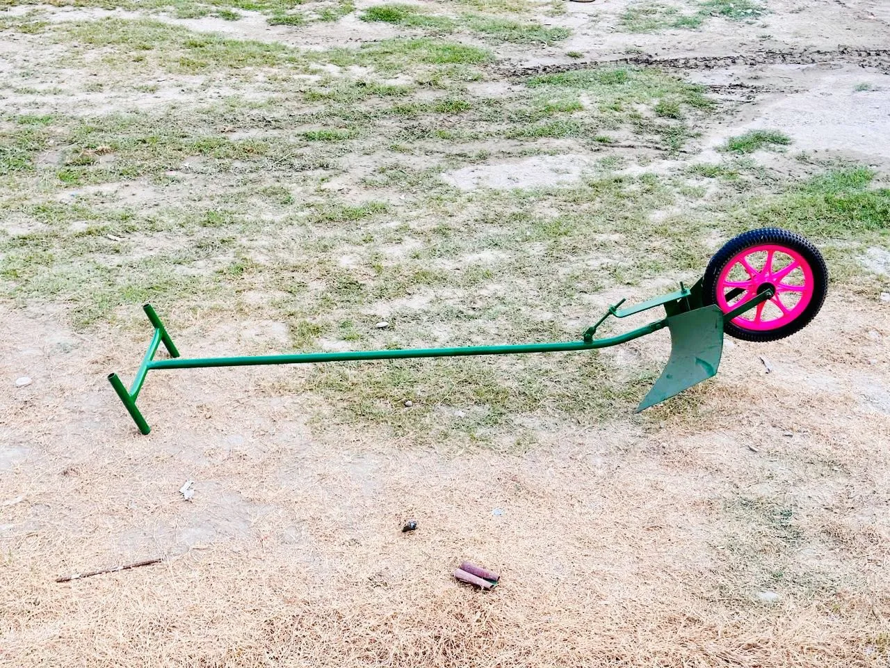

Bed maker
Useful for preparing land and beds for farming.
Durable tools for bed preparation, transport, crop care, and daily field work.
Dipak Suppliers provides agricultural tools for farmers in Morang and nearby areas. Existing products include bed maker, strong Urbana wheelbarrow, container hoe fork, dhwani yantra, urea applicator, and chulo.
The tools are selected for local farming work, transport, crop care, and repeated daily use.

Useful for preparing land and beds for farming.
Useful for carrying construction material, sand, soil, garden supplies, and tools.
Creates loud sound to help keep monkeys, elephants, and other wild animals away from fields.
Yes. Contact Dipak Suppliers directly for current availability and product details.
Dipak Suppliers is based in Urlabari, Morang and supports local customers directly.